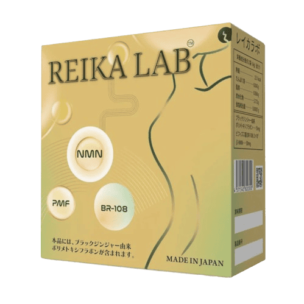
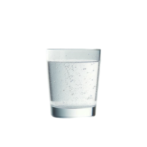
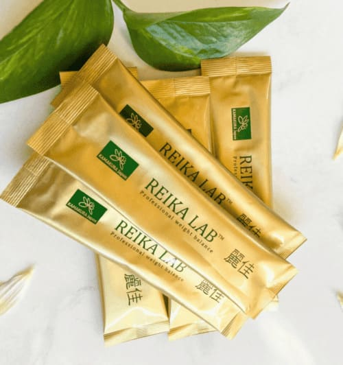
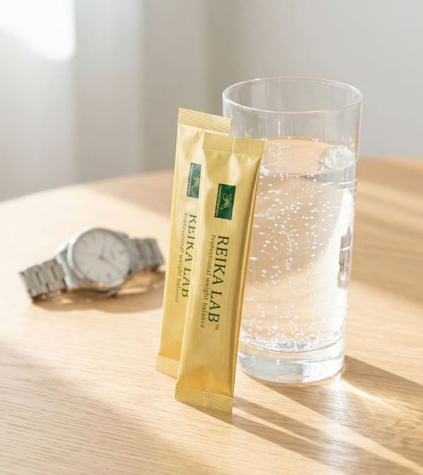
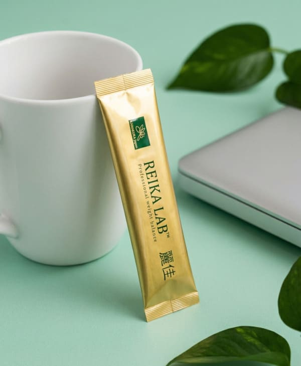
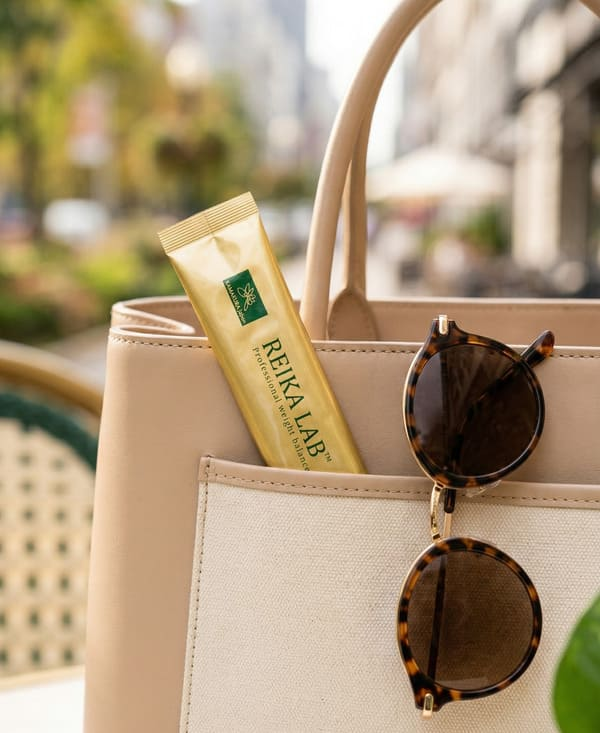
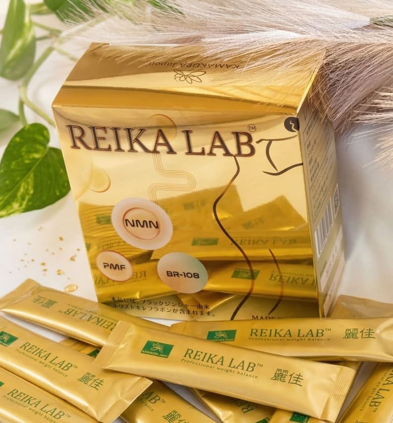
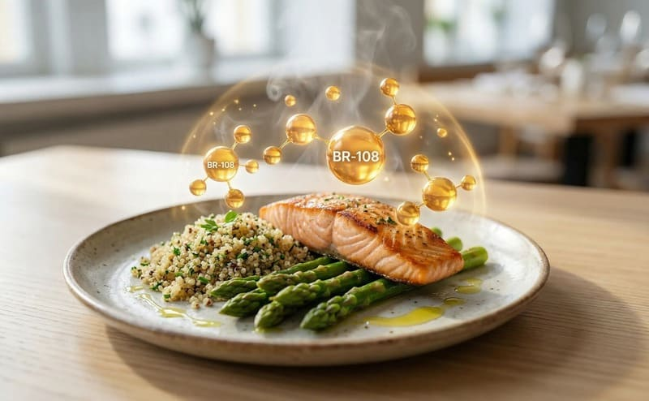
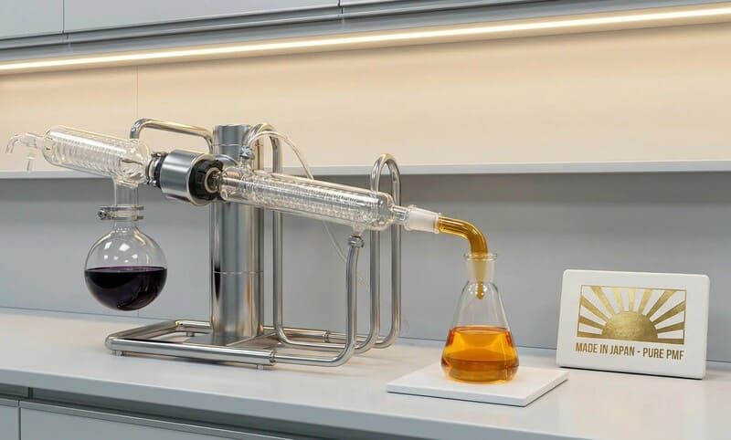

無理なく続ける、
体重バランス習慣。
ブラックジンジャー由来成分配合。
1日2スティックで、シンプルに続ける。

ダイエットが続かない。
忙しくて時間が取れない。
複雑な方法は長続きしない。
そんな日常に、無理のない選択を。
REIKA LABは、
「続けやすさ」にこだわった
シンプル設計。
1日2スティック。
それだけで、毎日の習慣に。






Features
PMF（ポリメトキシフラボン）の力
ブラックジンジャー由来の
希少成分「PMF」
本製品の主役であるPMF（ポリメトキシフラボン）は、厳選されたブラックジンジャーからわずかしか抽出されない希少な成分。日常のコンディション作りの強力な土台となります。
年齢に負けない
巡りと代謝バランス
PMFは、年齢とともに変化するカラダの巡りに直接アプローチします。無理な負担をかけず、本来のすっきりとしたリズムを取り戻すサポートをします。

内臓脂肪・細胞内脂肪と、
善玉菌BR-108（登録商標）
内臓脂肪や細胞内の脂肪の代謝バランスをサポートする設計に、腸内の善玉菌BR-108（登録商標）を配合。毎日の食事から摂れる栄養素を、より効率よく吸収・活用できるよう後押しします。

高純度抽出と
安心の日本品質
先進の技術を用いてブラックジンジャーからPMFを高純度で分離。毎日安心してお飲みいただけるよう、厳格な国内基準のもとで製造しています。
科学に基づいた処方設計
先進抽出技術により、ブラックジンジャーからPMFを分離し、成分の働きを最大限に引き出します。
さらに、ポストバイオティクスとの組み合わせにより、相乗的なバランスサポートを実現。
医薬品基準に準拠した品質試験により、安定した品質を確保しています。
HOW TO USE
1日2スティックを目安に、
水またはぬるま湯と一緒にお召し上がりください。
毎日続けることをおすすめします。
どんなシーンでも取り入れやすい、
シンプルな習慣。
Trust
安心へのお約束
日本製
JAPAN QUALITY
品質試験実施
QUALITY TESTED
シンプル処方
SIMPLE FORMULA
毎日続けるものだからこそ、
安心できる品質を。
Review
お客様の声
FAQ
よくある質問
どのくらいで実感できますか？
継続的なご利用をおすすめしております。実感には個人差があります。
食事制限は必要ですか？
基本的には不要ですが、バランスの良い食生活をおすすめします。
いつ飲むのがおすすめですか？
お薬ではないため決まりはありませんが、朝食後やリフレッシュしたいタイミングなど、ご自身の習慣にしやすい時間をおすすめしております。